Cool Hangout Spots
Check out the best hangout spots in Sydney! Perfect places to chill, meet friends, or enjoy a fun day out.
Top 10 Hang-out Spots
- Darling Harbour, Sydney – Vibrant waterfront precinct with restaurants, entertainment, and scenic views.
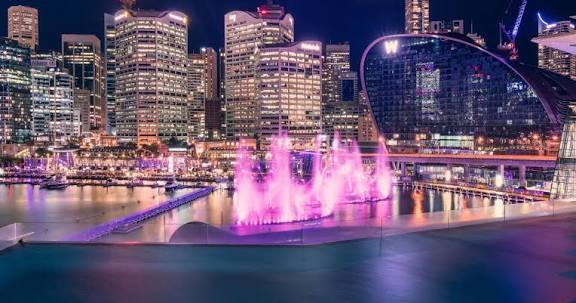
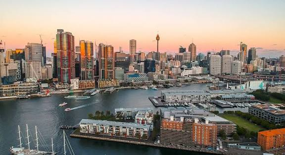
- Chippendale, Chippendale – Vibrant suburb with art galleries, restaurants, and a bustling food scene.
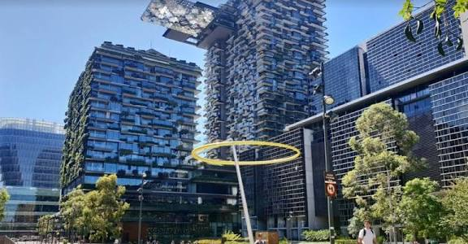
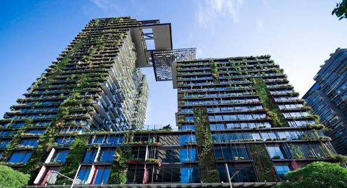
- Royal Botanic Garden, Sydney – Peaceful escape perfect for picnics and nature walks.
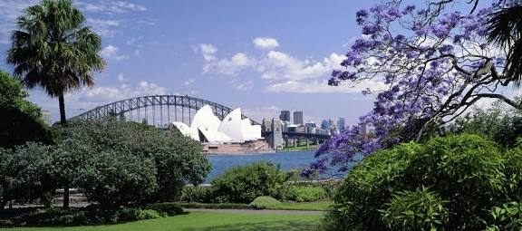
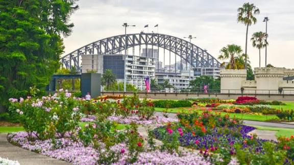
- The Rocks, Sydney – Historic district with markets, shopping, and local eats.
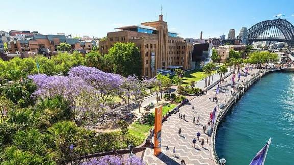
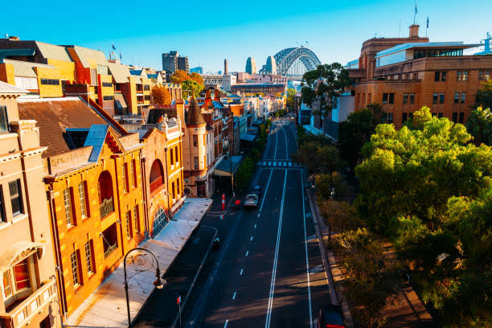
- Bondi Beach, Bondi – Famous beach with surf culture and coastal walks.
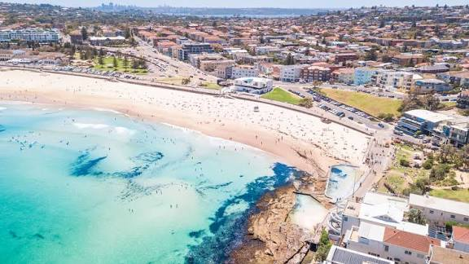
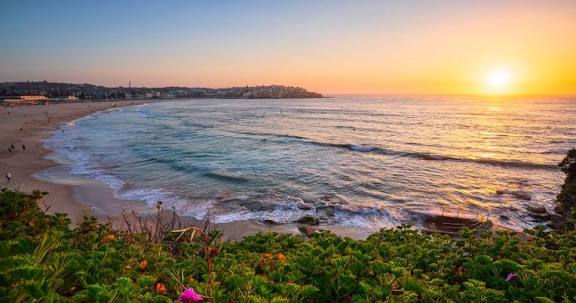
- Barangaroo Reserve, Barangaroo – Waterfront park with walking paths and picnic spots.
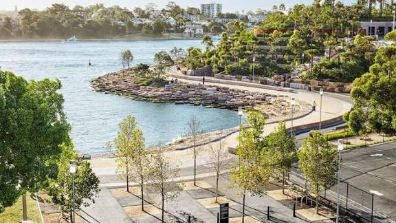
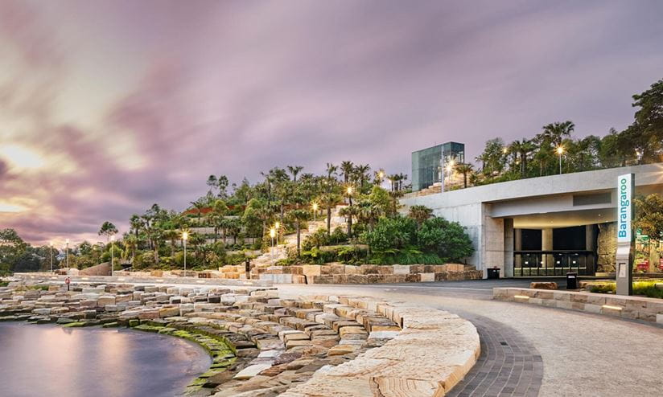
- MM Karaoke Bars, Chinatown – Fun night out singing with friends in lively bars.
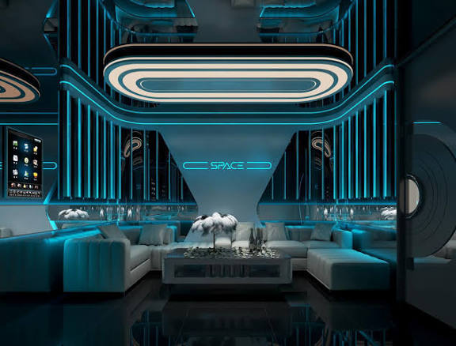
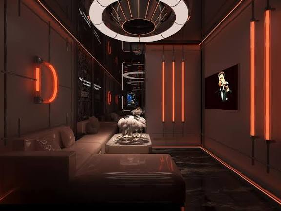
- Luna Park, Milsons Point – Iconic amusement park with rides, games, and harbour views.
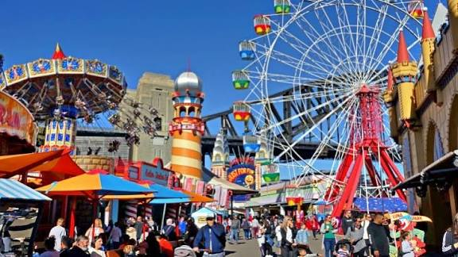
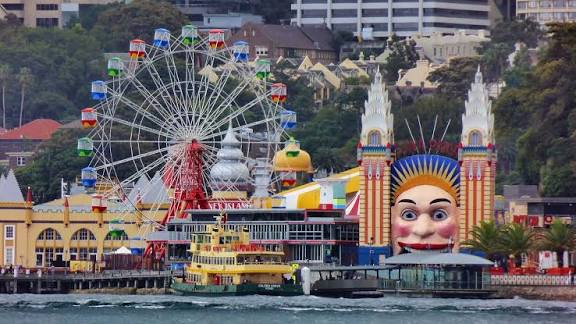
- Art Gallery of New South Wales, Sydney – Cultural spot with art exhibitions and garden views.
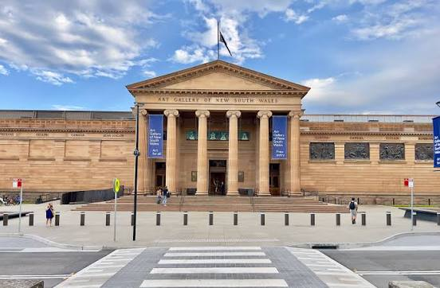
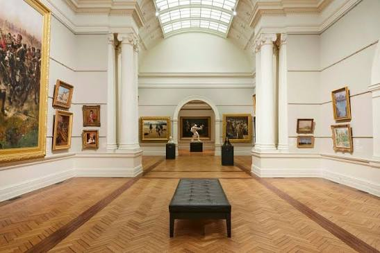
- Watsons Bay, Eastern Suburbs – Scenic coastal spot with beaches, seafood, and stunning harbour views.
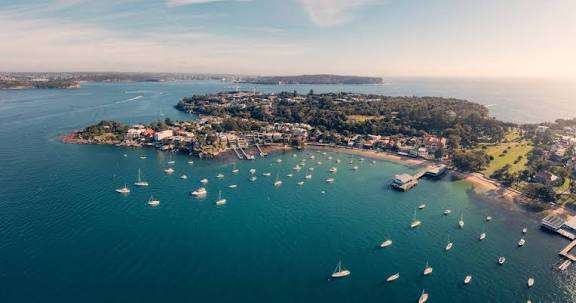
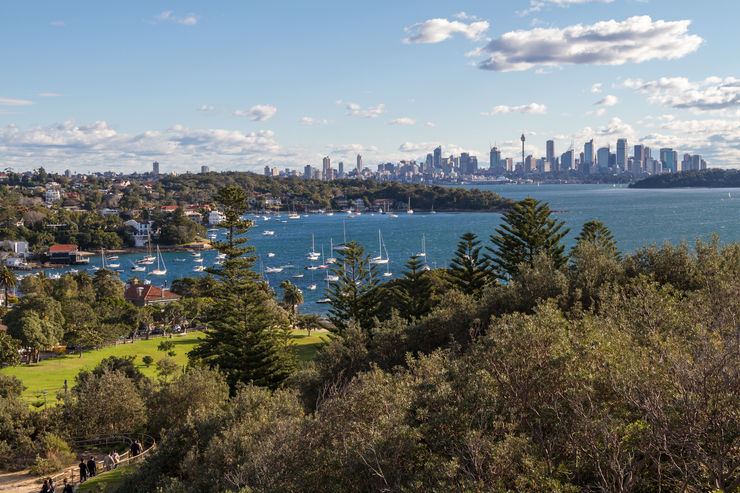